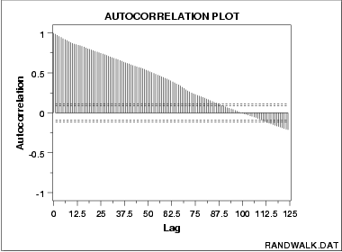

|
1.
Exploratory Data Analysis
1.3. EDA Techniques 1.3.3. Graphical Techniques: Alphabetic 1.3.3.1. Autocorrelation Plot
|
|||
| Autocorrelation Plot for Strong Autocorrelation |
The following is a sample autocorrelation plot.
 |
||
| Conclusions |
We can make the following conclusions from the above plot.
|
||
| Discussion | The plot starts with a high autocorrelation at lag 1 (only slightly less than 1) that slowly declines. It continues decreasing until it becomes negative and starts showing an incresing negative autocorrelation. The decreasing autocorrelation is generally linear with little noise. Such a pattern is the autocorrelation plot signature of "strong autocorrelation", which in turn provides high predictability if modeled properly. | ||
| Recommended Next Step |
The next step would be to estimate the parameters for the
autoregressive model:
The randomness assumption for least squares fitting applies to the residuals of the model. That is, even though the original data exhibit non-randomness, the residuals after fitting Yi against Yi-1 should result in random residuals. Assessing whether or not the proposed model in fact sufficiently removed the randomness is discussed in detail in the Process Modeling chapter. The residual standard deviation for this autoregressive model will be much smaller than the residual standard deviation for the default model
| ||